Locații de nuntă în Timișoara
- locații în director
- 37
- cu cazare în registrul SITUR
- 9
- medie ponderată Google
- 4,4 / 5
- evaluări Google
- 21.038
Cum alegi o locație în Timișoara
În Timișoara poți începe comparația cu Hotel Branco (hotel), Venue Ballroom & Events (sală de nunți), Galla Events (sală de nunți). Aceste proprietăți apar în primele poziții când luăm în calcul împreună nota și numărul de evaluări Google. Salvează adresele care vă interesează pentru a le așeza apoi alături în fișa de comparare a ofertelor.
Pentru partea de afară, avem o descriere a spațiului folosit la evenimente la Tresor Le Palais Timisoara, Curio Collection by Hilton — Ceremonie în grădină · Ivy Events — Ceremonii la foișor. La vizionare, cere schița pentru numărul vostru de persoane, inclusiv locul unde vor sta muzicienii și pe unde intră invitații.
Dacă vin rude de departe, Tresor Le Palais Timisoara, Curio Collection by Hilton are o unitate de cazare asociată în registrul SITUR. Înregistrarea pentru Tresor Le Palais cuprinde 62 de locuri de dormit în 31 de spații de cazare. Întreabă câte camere pot fi păstrate pentru aceeași noapte înainte să trimiți invitaților detaliile de rezervare.
Dacă vrei să vezi două proprietăți în aceeași zi, poți continua de la BUCȘARU_home.SRL spre VALERY Evenimente din Moșnița Nouă. Punctele lor sunt la 0,6 km în linie dreaptă. Deschide traseul înainte să fixezi ora celei de-a doua vizite, mai ales dacă grupul se deplasează cu autocarul.
Locații pentru vizionare
Ordinea ține cont de nota Google și de numărul evaluărilor. Cum calculăm ordinea
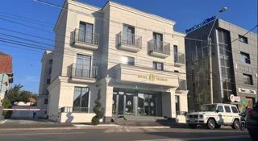
Fotografie a locației · Sursa fotografiei Timișoara · Hotel
Hotel Branco
Hotel nou și modern pe Bd. Constantin Brâncoveanu din Timișoara, cu piscină și parcare gratuită; 4,9 din 301 de evaluări, bun pentru invitați.
Bulevardul Constantin Brâncoveanu 103, 300425 Timișoara+40 773 704 566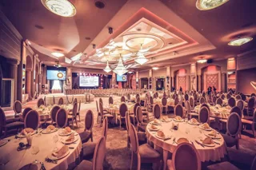
Fotografie a locației · Sursa fotografiei Timișoara · Sală de nunți
Venue Ballroom & Events
Venue Ballroom & Events, Timișoara. În interior i s-a părut că sunetul devenea mai puțin plăcut la volum mare.
Strada Divizia 9 Cavalerie 64, 300264 Timișoara+40 747 037 122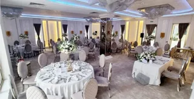
Fotografie a locației · Sursa fotografiei Timișoara · Sală de nunți
Galla Events
Galla Events, Timișoara. Complexul are două săli interioare cu limite foarte diferite, iar în exterior sunt menționate grădina și piscina.
Calea Dorobanților 96, 300309 Timișoara+40 731 600 000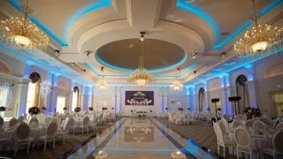
Fotografie a locației · Sursa fotografiei Timișoara · Local pentru evenimente
Palazzo Luxury
La Palazzo Luxury, un participant la banchet povestește că ora la care s-a strâns masa nu a corespuns intervalului pe care îl aștepta din contract.
Calea Lugojului 27, 307200 Timișoara+40 766 630 930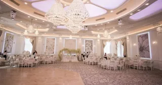
Fotografie a locației · Sursa fotografiei Timișoara · Hotel
Tresor Le Palais Timisoara, Curio Collection by Hilton
Tresor Le Palais Timisoara, Curio Collection by Hilton. Această ordine vă permite să analizați separat două momente: intrarea la ceremonie și primirea la cină.
Strada Radu Tudoran 18, 300331 Timișoara+40 256 228 754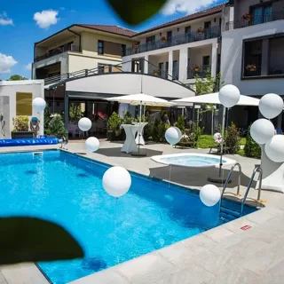
Fotografie a locației · Sursa fotografiei Timișoara · Pensiune
Pensiunea Nora Prestige
Pensiunea Nora Prestige, Timișoara. Apreciază și faptul că a putut pleca de la pensiune înainte de ivirea zorilor.
Strada Căpitan Damșescu 9, 300150 Timișoara+40 758 024 437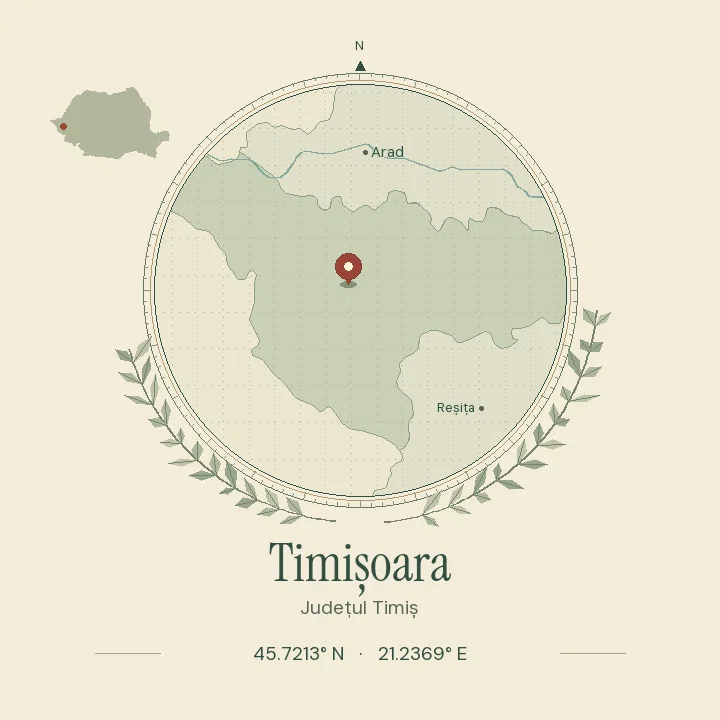
Hartă ilustrată Timișoara · Organizator de petreceri
Party land Timisoara
Party land Timisoara, Timișoara. O familie spune că a revenit cinci ani la rând la Party Land pentru aniversarea fiicei și amintește piscina.
Calea Martirilor 1989 101, 307221 Timișoara+40 728 284 090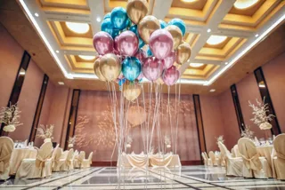
Fotografie a locației · Sursa fotografiei Timișoara · Local pentru evenimente
Iulius Congress Hall
La Iulius Congress Hall, un participant la o nuntă și-a exprimat dezamăgirea față de mai multe feluri din meniu.
Ansamblul Iulius Mall, Strada Aristide Demetriade nr. 1, etajul 1, 300088 Timișoara+40 723 251 086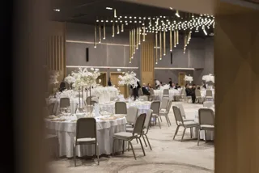
Fotografie a locației · Sursa fotografiei Timișoara · Centru de conferințe
Timișoara Convention Center
Timișoara Convention Center. La un congres găzduit aici, un participant venit cu mașina electrică nu a putut folosi stația de încărcare.
Strada Mărășești 1-3, 300086 Timișoara+40 724 587 058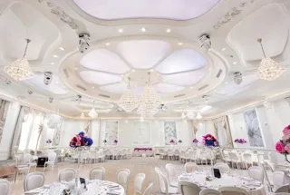
Fotografie a locației · Sursa fotografiei Timișoara · Local pentru evenimente
Tresor Le Palais Events
Tresor Le Palais Events, Timișoara. La Tresor, un cuplu localizează cu precizie nunta de la sfârșit de octombrie în sala Symphony.
Strada Radu Tudoran 18, 300331 Timișoara+40 726 304 305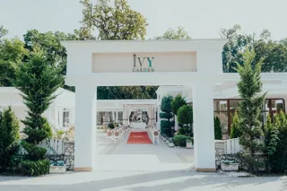
Fotografie a locației · Sursa fotografiei Timișoara · Sală de nunți
Ivy Events
Ivy Events. Dacă invitații trebuie să vă aștepte înainte de cununie, întrebați pe care terasă pot fi întâmpinați și pe unde vor merge împreună până la foișor.
Strada Avram Imbroane 90, Timișoara+40 736 010 166Hartă ilustrată Timișoara · Pensiune
Casa Leone
Pensiune cu grădină și terase pe Eroilor de la Tisa, în Timișoara, lăudată pentru gazde și curățenie. Utilă pentru cazarea invitaților la o nuntă.
Bulevardul Eroilor de la Tisa 67, 300562 Timișoara+40 723 329 612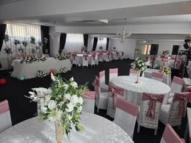
Fotografie a locației · Sursa fotografiei Timișoara · Restaurant
La Rousse events
La Rousse events, Timișoara. O familie care și-a sărbătorit botezul la La Rousse relatează că echipa a sprijinit-o pe parcursul organizării.
Strada Cloșca 53, 300350 Timișoara+40 744 777 384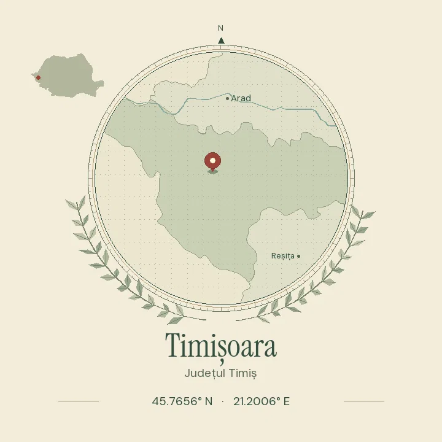
Hartă ilustrată Timișoara · Sală de nunți
Sala nunti timisoara
Sala nunti timisoara, Timișoara. Un vizitator folosește însă denumirea La Rousse și vorbește despre mâncare și oamenii care l-au primit.
Strada Cloșca 55, 300350 Timișoara+40 757 575 893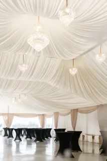
Fotografie a locației · Sursa fotografiei Timișoara · Centru de evenimente
Agora Events
Agora Events. Dacă sunteți interesați de livadă, această informație face importantă identificarea administratorului care poate aproba o petrecere privată.
DN69, Timișoara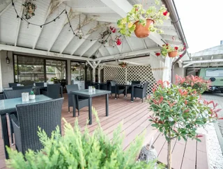
Fotografie a locației · Sursa fotografiei Timișoara · Hotel
Hotel Restaurant Ramina
Hotel cu restaurant pe Strada Strandului din Timișoara, unde s-a ținut o nuntă în 2026; camerele noi și vechi primesc păreri diferite.
Strada Strandului 12A, 300310 Timișoara+40 256 272 732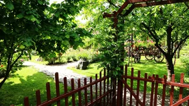
Fotografie a locației · Sursa fotografiei Timișoara · Hotel
Pensiunea Delia
Niște oaspeți care au lucrat de la distanță la Pensiunea Delia au folosit foișorul din curtea interioară și au apreciat parcarea din incintă.
Strada Chișodei 86, 300430 Timișoara+40 752 117 255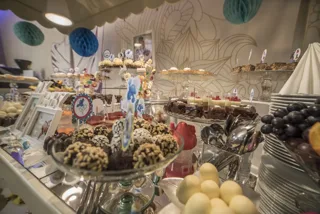
Fotografie a locației · Sursa fotografiei Timișoara · Local pentru evenimente
Cochet Ballroom
Salon de evenimente cu 230 de locuri în Timișoara, cu nunți descrise în recenzii, meniu lăudat și acces complet pentru scaun rulant.
Cochet Ballroom, Aleea Amiciției 2, 300288 Timișoara+40 720 174 530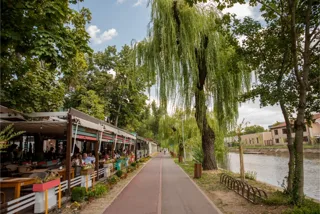
Fotografie a locației · Sursa fotografiei Timișoara · Local pentru evenimente
Rivière Ballroom
Rivière Ballroom, Timișoara. Un invitat la un botez de la Rivière își amintește sala cu ring de dans și lumina care cădea spre Bega până la apus.
Parcul Justiției Nr. 1, 300488 Timișoara+40 747 069 495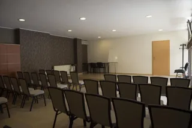
Fotografie a locației · Sursa fotografiei Timișoara · Sală de nunți
Perla Events
Perla Events, Timișoara. Cereți să se precizeze cine îi primește la intrare și cine îi anunță dacă ceremonia trebuie mutată.
Piața Bisericii 8, 300226 Timișoara+40 722 377 280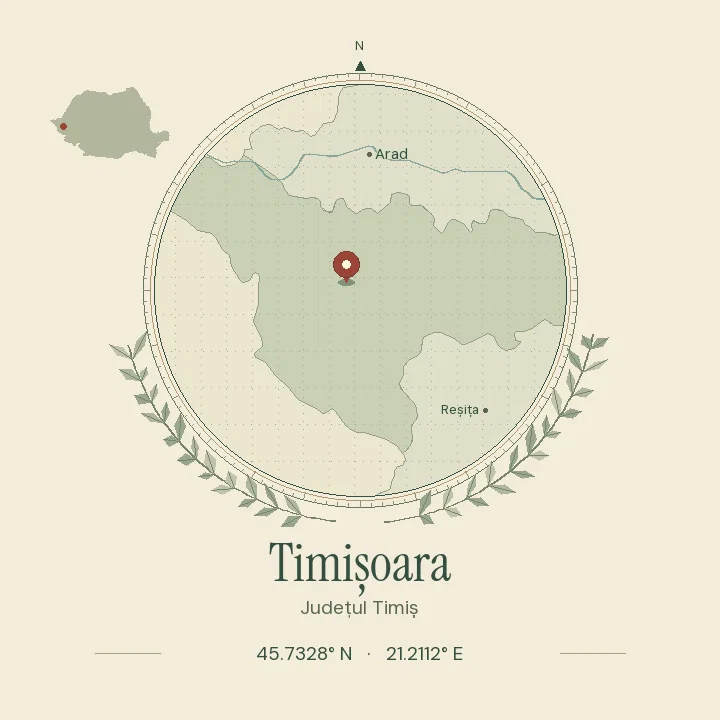
Hartă ilustrată Timișoara · Local pentru evenimente
Sala de evenimente Dance Ballroom
Sala de evenimente Dance Ballroom, Timișoara. Decorul de la Dance Ballroom se vede bine în imaginea mesei lungi așezate pe lângă perete.
Strada Gheorghe Ranetti 28, 300417 Timișoara+40 727 004 252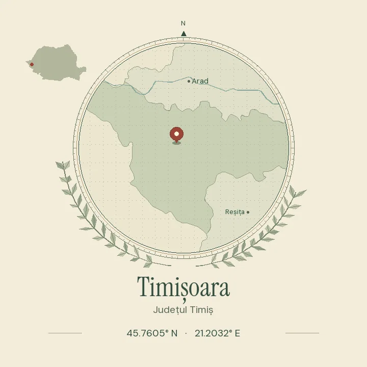
Hartă ilustrată Timișoara · Local pentru evenimente
A&G Events
La A&G Events din Timișoara, o recenzie descrie servirea mesei. Ce poți verifica la o degustare și cum ceri o vizionare pentru cununie.
Strada Eroii de la Păuliș 3-5, Timișoara+40 723 236 235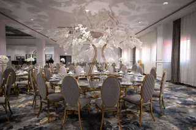
Fotografie a locației · Sursa fotografiei Timișoara · Local pentru evenimente
Abel Events
Abel Events. O persoană care a participat la un eveniment la Abel pune accent pe decorul sălii, pe servire și pe felul în care echipa a organizat petrecerea.
Calea Lugojului 11-15, 307200 Timișoara+40 721 907 722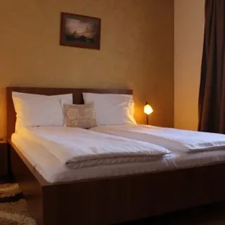
Fotografie a locației · Sursa fotografiei Timișoara · Bed & Breakfast
Pensiunea Normandia
În aceeași relatare, accesul de pe arterele principale și parcarea au contat la sosire, iar camera i s-a părut spațioasă și mobilată rustic.
Strada Salcâmilor 35, 300758 Timișoara+40 745 365 987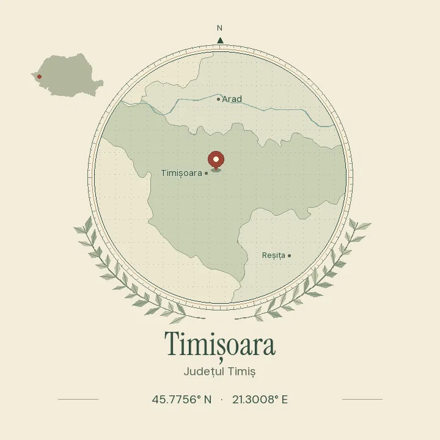
Hartă ilustrată Timișoara · Bed & Breakfast
Pensiunea Venezia
Pensiunea Venezia. Când vizitezi Venezia, merită să intri și în camerele pe care le-ai rezerva, chiar dacă motivul principal al deplasării este foișorul.
Calea Lugojului 27, 307200 Timișoara+40 752 243 708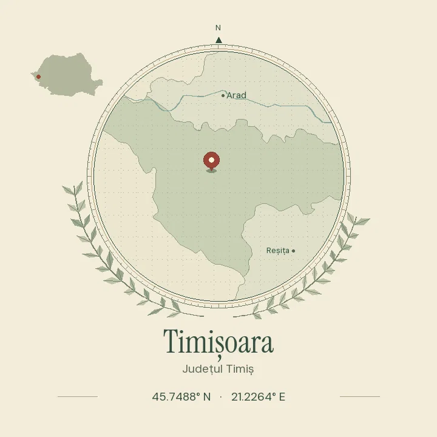
Hartă ilustrată Timișoara · Restaurant cu specific românesc
Grădina Bănațeană
Restaurant cu terasă pe malul Begăi, lângă podul Mihai Viteazu din Timișoara, unde s-a ținut un majorat pentru 20 de persoane. Ce să confirmi la rezervare.
Splaiul Spiru Haret 1, 300023 Timișoara+40 746 095 573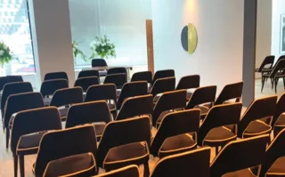
Fotografie a locației · Sursa fotografiei Timișoara · Centru de afaceri
Centrul Regional de Afaceri CRAFT
Complex expozițional din Timișoara care a găzduit un târg pentru mirese în 2025; 4,3 din 2.275 de evaluări. Parcarea e punctul slab.
Bulevardul Eroilor de la Tisa nr.22, 300575 Timișoara+40 372 185 278Fotografie a locației · Sursa fotografiei Timișoara · Hotel
Hotel Timișoara
Hotel Timișoara, Timișoara. Cere numele sălii de rezervă în aceeași ofertă, ca să fie clar unde ar continua ceremonia dacă vremea închide terasa.
Strada Mărășești 1-3, 300086 Timișoara+40 256 498 852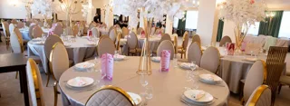
Fotografie a locației · Sursa fotografiei Timișoara · Local pentru evenimente
Royal Ballroom
Un botez de iarnă la Royal Ballroom arată de ce merită să întrebi numele și etajul sălii chiar de la prima discuție.
Str. Lorena 1, 300127 Timișoara+40 792 309 988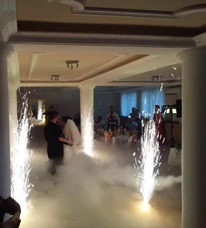
Fotografie a locației · Sursa fotografiei Timișoara · Local pentru evenimente
Maldini Events
Maldini Events, Timișoara. Un client de la Maldini descrie tensiuni legate de folosirea curentului în timpul unui eveniment.
Calea Martirilor 1989 172, 300777 Timișoara+40 722 712 077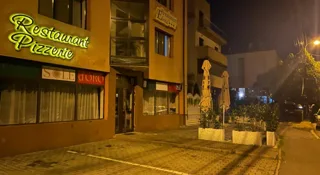
Fotografie a locației · Sursa fotografiei Timișoara · Pensiune
Pensiunea Elena
Pensiunea Elena. Căldura de la mansardă și o parcare mică în spatele pensiunii sunt detaliile pe care le-a remarcat un oaspete venit la Elena vara.
Strada Oravița 2A, 300244 Timișoara+40 799 724 714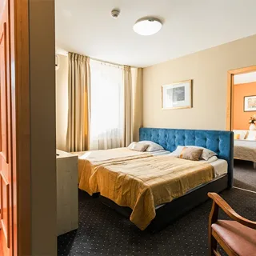
Fotografie a locației · Sursa fotografiei Timișoara · Hotel
Hotel Pacific
Hotel Pacific. Un oaspete al Hotelului Pacific estima în 2026 că a mers aproximativ douăzeci de minute pe jos până în centrul vechi al Timișoarei.
Strada Mihail Kogălniceanu 8, 300126 Timișoara+40 746 196 605Fotografie a locației · Sursa fotografiei Timișoara · Bed & Breakfast
Pensiunea Venus
Un oaspete de la Venus își amintește terasa ca loc pentru cafea sau bere și spune că la data vizitei pensiunea nu avea propriul restaurant ori bar.
Bulevardul Liviu Rebreanu 59, 300425 Timișoara+40 763 777 351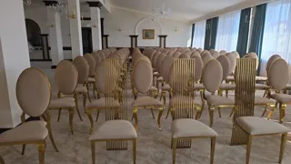
Fotografie a locației · Sursa fotografiei Timișoara · Hotel
Hotel Royal Plaza Timisoara
Hotel Royal Plaza Timisoara, Timișoara. Pentru un cuplu care rezervă și sala, și camerele, observația e relevantă în ambele direcții.
Str. Lorena 1, 300127 Timișoara+40 727 120 427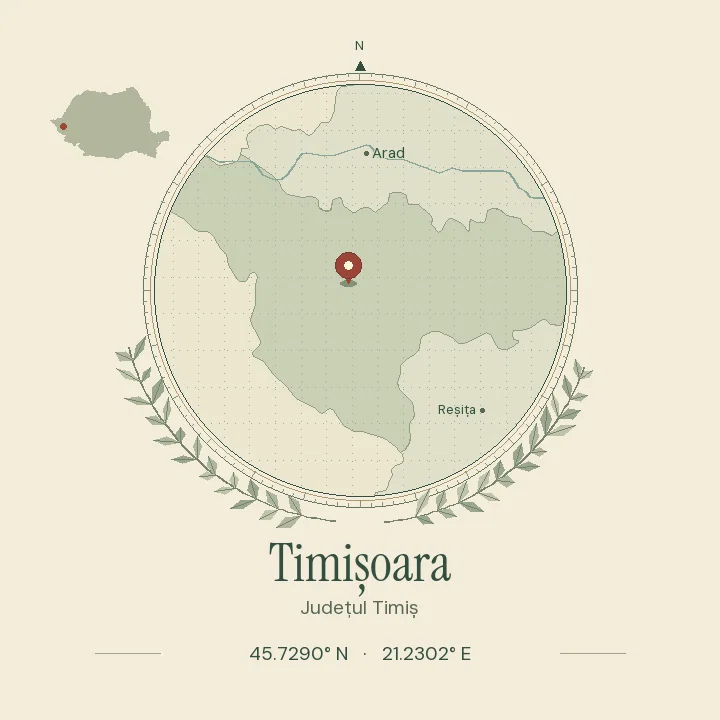
Hartă ilustrată Timișoara · Bed & Breakfast
Pensiunea Uno
Pensiunea Uno. Fațada de la Uno i s-a părut unui vizitator suficient de diferită de imaginile de pe platforma de rezervări încât a găsit greu pensiunea.
Str. Mureș 88, 300001 Timișoara+40 356 172 033Hartă ilustrată Timișoara · Bed & Breakfast
Pensiunea Timişoara
Pensiunea Timişoara, Timișoara. Cineva care căuta o masă pentru patruzeci de persoane a ales Pensiunea Timișoara datorită apropierii.
Bulevardul 16 Decembrie 1989 57, 300425 Timișoara+40 356 469 610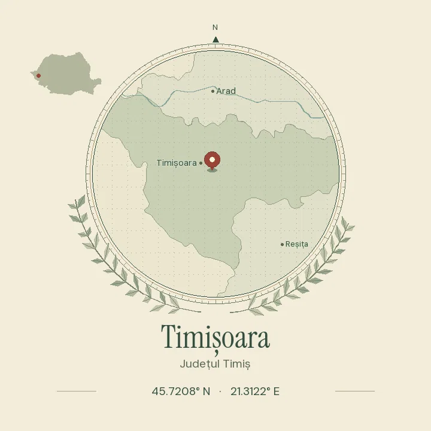
Hartă ilustrată Timișoara · Castel
BUCȘARU_home.SRL
BUCȘARU_home.SRL. Înregistrarea apare asociată cu Timișoara, însă adresa scrisă indică satul Folea din comuna Voiteg, pe strada Principală, la numărul 382.
COM .voiteg sat folea, Str. Principală 382, 307471 Timișoara
Întrebări despre locațiile din Timișoara
Unde pot dormi invitații în Timișoara?
În registrul de cazare SITUR găsim Tresor Le Palais Timisoara, Curio Collection by Hilton (62 de locuri de cazare), Tresor Le Palais Events (62 de locuri de cazare), Casa Leone (20 de locuri de cazare). Verifică ce camere sunt libere pentru noaptea evenimentului.
Ce spații sunt documentate pentru evenimente în aer liber în Timișoara?
Tresor Le Palais Timisoara, Curio Collection by Hilton — Ceremonie în grădină. Ivy Events — Ceremonii la foișor. Perla Events — Spațiu exterior complementar pentru nuntă.
Ce tarife de meniu au publicat locațiile din Timișoara?
Sala nunti timisoara — Ofertă nuntă · septembrie 2026, De la 298 lei/persoană, necesită reconfirmare. Oferta operatorului. Maldini Events — Meniu 1 pentru 2027, 260 lei/persoană, personalul se achită separat. Oferta operatorului. Verifică în oferta pentru data voastră dacă intră băuturile, TVA-ul și închirierea spațiului.
Care locație din Timișoara are cele mai multe evaluări Google?
Hotel Timișoara are 3.770 de evaluări în profilul Google folosit la documentare. Evaluările acoperă și alte experiențe la proprietate, inclusiv vizitele fără eveniment.
Unde apare o intrare accesibilă în Timișoara?
Profilurile Google indică o intrare accesibilă la Venue Ballroom & Events, Galla Events, Palazzo Luxury. Pentru o cununie în exterior, cere detalii despre traseul dintre intrare și zona cu scaune.
Ce alte localități pot include într-o vizionare lângă Timișoara?
Cele mai apropiate adrese comparate pe hartă sunt în Moșnița Nouă, Dumbrăvița, Giroc. Găsești mai jos distanțele dintre proprietățile folosite pentru această comparație.
Vizionări în apropiere
- Moșnița Nouă · 2 locații. Între BUCȘARU_home.SRL și VALERY Evenimente sunt 0,6 km în linie dreaptă.
- Dumbrăvița · 1 locație. Între Cochet Ballroom și Hotel Galaxy sunt 1,5 km în linie dreaptă.
- Giroc · 3 locații. Între Party land Timisoara și Colosseum sunt 1,8 km în linie dreaptă.